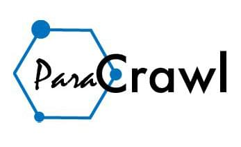
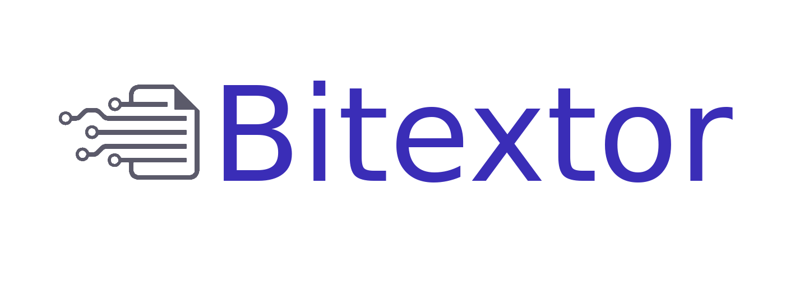
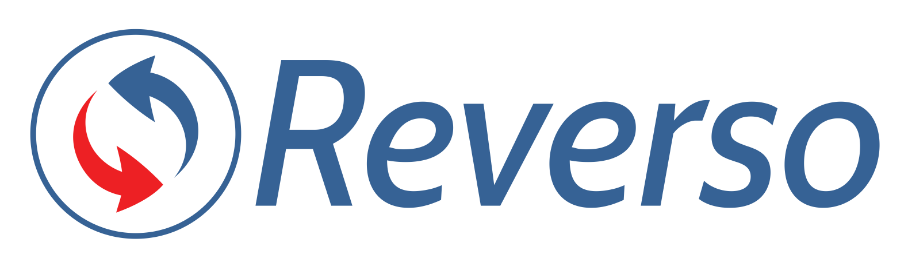
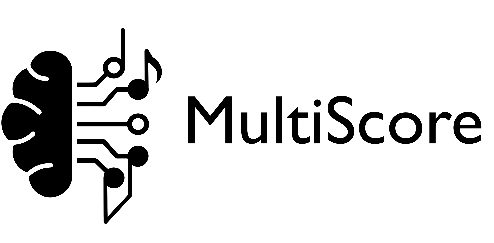
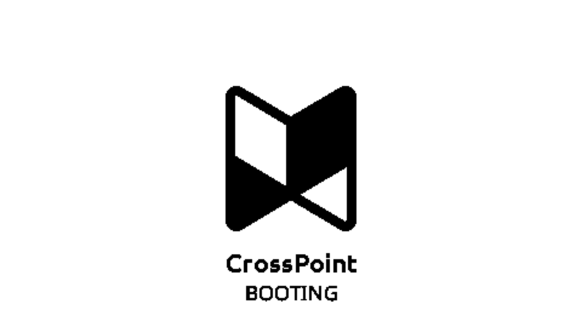
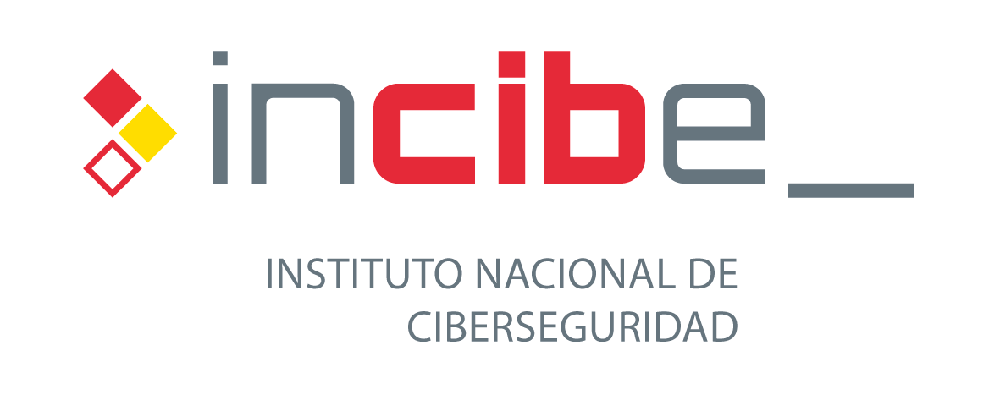

NLP LLM Data Distributed Systems
I build research and production systems for language technology and machine learning, from web-scale data acquisition and processing to Transformer models and memory-constrained software.
My experience spans more than a decade: multilingual pipelines processing over 1 PB of web data, production NLP at more than seven million daily queries, open-source language technology and applied ML research.
Web crawling, multilingual text extraction, filtering, alignment and data quality for NLP and language-model training. I have designed and operated distributed pipelines over Common Crawl and other web corpora at petabyte scale.
NLP, Transformers, information retrieval and multimodal problems, from experimentation and evaluation to maintainable production systems.
Python and C++ engineering, distributed computing and HPC workloads, constrained-memory systems, reproducible testing and long-term open-source development.

Web-scale multilingual data pipelines >1 PB processed
I led engineering for large-scale pipelines that acquired, processed and curated multilingual web data for machine translation and language-model research.
My work covered crawling, Common Crawl and WARC processing, distributed execution, text extraction, language identification, alignment and data cleaning across HPC and cloud infrastructure with international research partners.
Focus: multilingual NLP web data distributed computing data quality
Stack: Python C++ Snakemake HPC and cloud Common Crawl WARC

Open-source pipeline for multilingual web data
I worked as a core developer and maintainer of Bitextor, an open-source system for harvesting, extracting, aligning and cleaning multilingual web content from a single machine to distributed computing environments.
The project has been used in large European language-data initiatives including ParaCrawl and MaCoCu and combines web processing, NLP, orchestration and high-performance computing.
Focus: crawling text extraction language identification alignment filtering
Stack: Python C++ Bash Snakemake distributed systems HPC

Production NLP and search >7M daily queries
I contributed to the data and retrieval pipelines behind Reverso Context, improving search accuracy for multilingual examples drawn from aligned corpora.
The production NLP system operated at more than seven million daily queries as part of the wider Reverso product ecosystem.
Focus: multilingual NLP information retrieval parallel corpora production scale
Visit Reverso Context
Transformer-based music transcription
I led the engineering work for MultiScore, a research project developing Transformer-based models for optical and audio music transcription within a shared end-to-end framework.
The project brought machine learning research, evaluation and music-domain knowledge together to turn score images and musical audio into structured notation.
Focus: Transformers multimodal ML optical music recognition automatic music transcription
Visit the project
Systems and open-source engineering
CrossPoint is community-built, fully hackable open-source firmware for ESP32-C3-based Xteink X3 and X4 e-readers. My work as a project maintainer has included EPUB rendering, constrained-memory reliability, performance, testing and localization.
Focus: embedded C++ parsing constrained-memory systems testing
View on GitHub
Applied AI research and development
My work at Treelogic has included two AI initiatives: CARAMEL, exploring personalized cardiovascular risk assessment for women during the menopausal transition; and CRYPTOTRACK, monitoring cryptocurrency transactions to detect illicit activity.